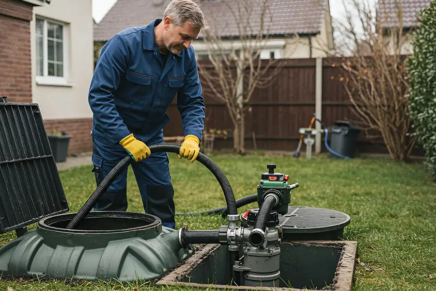

MAINTENANCE
How To Maintain Your Septic System
Learn simple maintenance habits that can help keep your septic system working efficiently.
Read Guide
Learn the everyday practices, maintenance routines, and warning signs that can help you take better care of your septic system.
Explore practical septic care information, maintenance tips, warning signs, and service guidance to help you better understand your septic system.
Learn simple maintenance habits that can help keep your septic system working efficiently.
Read Guide
Understand common warning signs and when it may be time to arrange professional service.
Read Guide
Learn why pumping matters, what the process involves, and what homeowners should expect.
Read Guide
Discover practical ways to protect the drainfield and avoid unnecessary strain on your septic system.
Read GuideSeptic maintenance needs vary by system and household. Use this as a practical starting point and follow the recommendations provided for your specific system.
There is no single maintenance schedule that fits every septic system. Tank size, system design, household size, usage, soil conditions, and system condition can all affect service needs.

Your daily water and waste habits have a direct effect on the amount of material and wastewater entering the septic system.
Spread major water-using activities throughout the day instead of creating unnecessary surges.
Keep non-degradable waste, grease, and unsuitable materials out of household drains.
Follow product instructions and avoid introducing unnecessary chemicals into the wastewater system.
Avoid heavy structures, vehicle traffic, or inappropriate landscaping over septic components.
Changes in your home's drainage or the area around your septic system should be taken seriously, especially when they continue or become more noticeable.
Multiple slow drains can indicate a problem that deserves professional evaluation.
Strong or unusual wastewater odors around drains or system areas should not be ignored.
Unexplained wet areas around the septic system may require professional assessment.
Wastewater backing up into fixtures can indicate an urgent system or plumbing problem.
Good septic care is often about consistency. A few simple habits can help reduce unnecessary strain on the system.
Keep septic service records and inspection information.
Fix leaking fixtures to reduce unnecessary water flow.
Keep access points known and reasonably accessible.
Flush wipes, grease, or unsuitable materials down drains.
Drive heavy vehicles over septic system areas.
Ignore recurring drainage or wastewater problems.

Save this list as a quick reminder when reviewing your home's septic system and maintenance habits.

If you're unsure about your septic system's condition or maintenance needs, ClearFlow can help you determine the appropriate next step.